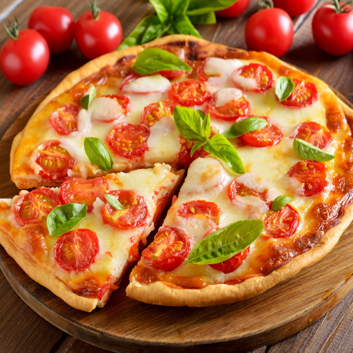
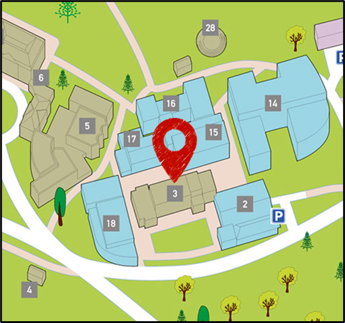

Newton Campus Pizza Collection & DeliveryBath Spa University offers a wide range of pizzas for all taste, including vegetarian and gluten free options as well as sides and drinks.
Pizzas are cooked fresh at the Refectory on Newton campus, where they can be collected or delivered to any location in Bath.

Opening times:
MON 12-8
TUES 12-8
WED 12-8
THURS 12-8
FRI 12-10
SAT 12-10
SUN 12-8